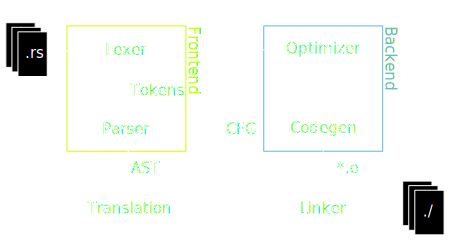
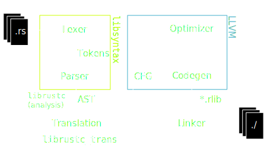
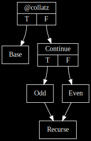
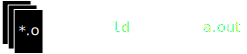

An Illustrated Guide to LLVM
or: an introduction to building simple and not-so-simple compilers with Rust and LLVM
Peter Marheine
2017-05-15
Rust Sydney
What?
A library for building compilers
Formerly "Low level virtual machine"
-
Compiler backends
- Code generation, optimization
- Not lexing, parsing
Supports both ahead-of-time and just-in-time
Industrial-grade
- Used in industry
- Apple
- Others
- Mature
- First release in 2003
- ~5 million LOC
Portable
Supports many systems:
- High-performance
- x86
- PowerPC
- SPARC
- Embedded
- ARM
- PowerPC
- SPARC
- GPUs
- AMD GCN
- Nvidia PTX
- Exotics
- BPF
- Hexagon
- C
Numerous frontends
- Clang (C)
- GHC (Haskell)
- LDC (D)
- OpenJDK (Java)
.. and of course rustc.
How?
Compiler structure
rustc

Talking to LLVM
IR goes in..
fn add(x: i32, y: i32) -> i33 {
(x as i33) + (y as i33)
}
target triple = "x86_64-unknown-linux"
define external i33 @add(i32 %x, i32 %y) nounwind readnone {
%xe = sext i32 %x to i33
%ye = sext i32 %y to i33
%result = add i33 %x, %y
ret i33 %result
}
..code comes out
.text
.globl add
add:
movsxd rcx, edi
movsxd rax, esi
add rax, rcx
ret
More complex
Testing the Collatz conjecture:
fn collatz(x: u32) -> bool {
if x == 1 {
return true;
}
let next = if x % 2 == 0 {
x / 2
} else {
(3 * x) + 1
}
collatz(next)
}
collatz(u32) in IR
define "fastcc" i1 @collatz(i32 %x) {
%finished = icmp eq i32 %x, 1
br i1 %finished, label %Base, label %Continue
Base:
ret i1 1
Continue:
%next = alloca i32
%odd = urem i32 %x, 2
%odd1 = trunc i32 %odd to i1
br i1 %odd1, label %Odd, label %Even
collatz(u32) continued
Odd:
%halved = udiv i32 %x, 2
store i32 %halved, i32* %next
br label %Recurse
Even:
%larger = mul i32 %x, 3
%larger1 = add i32 %larger, 1
store i32 %larger1, i32* %next
br label %Recurse
Recurse:
%nextval = load i32, i32* %next
%result = musttail call i1 @collatz(i32 %nextval)
ret i1 %result
}
SSA
Why not this?
%nextval = %halved
br label %Recurse
Even:
// ...
%nextval = %larger1
Recurse:
// use nextval
- Every value has exactly one assignment
- Allows the system to work with a true CFG
Control flow graph
Native format for optimization.
Speaking Merthese
| Token | Action |
|---|---|
| m | Print "merth" |
| e | Print "\n" |
| r | Print " " |
| t | Print random [a-z] [0, 13.4) times |
| h | Jump to after the next 'h' |
| _ | Do nothing |
Planning
Primitive operations- Print string
-
fn print(s: *mut u8, len: u8)
-
- Random integer
-
fn rand_inrange(max: u8) -> u8
-
These are not supported by any CPU..
Runtime library
Just like C!
- Statically linked
- Better optimization (inlining!)
- Self-contained
- Written in IR
- Because we can
- More portable
Program structure
_start
- Initialize RNG
- Open
/dev/urandom - Read bytes
- Close file
- Open
- Call
main exit(0)
We need to do syscalls
extern fn syscall(nr: i64, ...) -> i64;
define private i64 @syscall2(i64 %nr, i64 %p1, i64 %p)
inlinehint {
%1 = call i64 asm sideeffect "syscall",
"={rax},{rax},{rdi},{rsi}"
(i64 %nr, i64 %p1, i64 %p2)
ret i64 %1
}
- RAX: nr
- RDI: p1
- RSI: p2
- Result: RAX
extern fn open(path: *mut u8, flags: c_int) -> c_int
@__NR_open = private constant i64 2
define private i32 @open(i8 *%path0, i32 %flags0) {
%nr = load i64, i64* @__NR_open
%path = ptrtoint i8* %path0 to i64
%flags = zext i32 %flags0 to i64
%out0 = call i64 @syscall2(i64 %nr, i64 %path, i64 %flags)
%out = trunc i64 %out0 to i32
ret i32 %out
}
Back to
_start.
declare void @main()
define void @exit(i32 %code) noreturn {}
define void @_start() noreturn {
// initialize RNG
call void @main()
call void @exit(i32 0)
unreachable
}
Feels like C: declare external functions, glue them together.
Writing some Rust
Skeleton
extern crate llvm_sys as llvm;
fn main() {
unsafe {
LLVM_InitializeNativeTarget();
LLVM_InitializeNativeAsmPrinter();
LLVM_InitializeNativeAsmParser();
let ctxt = LLVMContextCreate();
/* Use ctxt */
LLVMContextDispose(ctxt);
}
}
Create main
declare void @main()
let main_name = b"main\0".as_ptr() as *const _;
let main_module =
LLVMModuleCreateWithNameInContext(main_name, ctxt);
let ty_void = LLVMVoidType();
let ty_fn_main = LLVMFunctionType(ty_void,
/* ParamTypes */ ptr::null_mut(),
/* ParamCount */ 0,
/* IsVarArg */ 0);
let main_function = LLVMAddFunction(main_module,
main_name,
ty_fn_name);
Emitting IR
fn LLVMPrintModuleToFile(M: LLVMModuleRef,
Filename: *const c_char,
ErrorMessage: *mut *mut c_char)
-> LLVMBool
fn LLVMPrintModuleToString(M: LLVMModuleRef) -> *mut c_char
Could we use io::Write instead?
Dropping to C++
extern "C" typedef int (*cb_t)(const void *, size_t, void *);
class raw_callback_ostream : public llvm::raw_ostream {
cb_t callback;
void *callback_data;
public:
raw_callback_ostream(cb_t cb, void *cb_data) { /* ... */ }
private:
void write_impl(const char *p, size_t sz) override {
callback(p, sz, callback_data);
offset += sz;
}
};
extern "C" void PrintModuleIR(LLVMModuleRef M,
cb_t cb,
void *cb_data) {
raw_callback_ostream out(cb, cb_data);
out << *llvm::unwrap(M);
}
Write to callbacks
extern "C" fn module_ir_printer<W>(src: *const u8,
size: libc::size_t,
state: *mut libc::c_void)
-> libc::c_int
where W: std::io::Write {
let (src, out) = unsafe {
(slice::from_raw_parts(src, size),
&mut *(state as *mut W))
};
let _res = out.write_all(src);
0
}
fn dump_module_ir<W>(module: LLVMModuleRef, mut out: W)
where W: std::io::Write {
unsafe {
PrintModuleIR(module,
module_ir_printer::<W>,
&mut out as *mut W as *mut libc::c_void);
}
}
let main_function = LLVMAddFunction(main_module,
main_name,
ty_fn_name);
dump_module_ir(main_module, std::io::stderr());
; ModuleID = 'main'
source_filename = "main"
declare void @main()
🎉
Using Builders
let bb_main =
LLVMAppendBasicBlockInContext(ctxt,
main_function,
b"\0".as_ptr() as *const _);
let b = LLVMCreateBuilderInContext(ctxt);
LLVMPositionBuilderAtEnd(b, bb_main);
LLVMBuildRetVoid(b);
LLVMDisposeBuilder(b);
define void @main() {
ret void
}
🎉🎉
Manual testing
The pieces so far
- linux-x86_64.ll
_startandprintfunctions for x86_64 Linux- random.ll
rand_inrangefunction and RNG impl- main.ll
- Generated
mainfunction
Code generation

llc linux-x86_64.ll
as -o linux-x86_64.o linux-x86_64.s
llc random.ll
as -o random.o random.s
llc main.ll
as -o main.o main.s
ld main.o linux-x86_64.o random.o
./a.out
Optimization
The generated code is inefficient!
_start: # @_start
sub rsp, 24
.Lcfi4:
xor esi, esi
movabs rdi, .Lurandom
lea rax, [rsp + 8]
mov qword ptr [rsp], rax # 8-byte Spill
call .Lopen
mov esi, 16
mov edx, esi
mov edi, eax
mov rsi, qword ptr [rsp] # 8-byte Reload
call .Lread
cmp rax, 16
jne .LBB7_2
- Less so if optimization is turned on
llc -O2
- Better: LTO
llvm-link *.ll -o a.bcllc -O2 a.bc, etc
We can do better (but not right now)
More Rust
Using the runtime
let ty_void = LLVMVoidTypeInContext(ctxt);
let ty_i8 = LLVMIntTypeInContext(ctxt, 8);
let ty_i8p = LLVMPointerType(ty_i8, 0);
let param_types = [ty_i8p, ty_i8];
let ty_rt_print = LLVMFunctionType(
ty_void,
param_types.as_ptr() as *mut _,
param_types.len(),
0);
let rt_print = LLVMAddFunction(
llmod,
b"print\0".as_ptr() as *const _,
ty_rt_print);
declare void print(i8*, i8)
Other functions left as an exercise for the reader.
Being wrong
LLVMVoidType ↔ LLVMVoidTypeInContext
Implicit global context ↔ explicit
- Mixing contexts is wrong and can cause miscompilation
- Tools to help prevent bugs?
Bug swatting
LLVMVerifyModule- Print message or abort
- Debug assertions
LLVM_ENABLE_ASSERTIONS- Usually not enabled in binary releases
- Manual inspection
- As done earlier
Filling in main
Parsing code
let code: Iterator<char>;
while let Some(c) = code.next() {
match c {
'm' => { /* Print "merth" */ },
'e' => { /* Print newline */ },
'r' => { /* Print space */ },
't' => { /* Random string */ },
'h' => { loop { match code.next() {
Some('h') | None => break,
_ => continue,
} } },
_ => { /* Do nothing */ },
}
}
m is for merth
m → print("merth", 5)
let b: Builder;
let v_5i8 = LLVMConstInt(ty_i8, 5, 0);
let v_merth = LLVMBuildGlobalStringPtr(
b,
b"merth\0".as_ptr() as *const _,
b"MERTH\0".as_ptr() as *const _);
LLVMBuildCall(b,
rt_print,
[v_merth, v_5i8].as_ptr() as *mut _,
2,
b"\0".as_ptr() as *const _);
e is for newline
e → print("\n", 1)
let v_newline = ptr_to_const(
llmod,
ty_i8,
LLVMConstInt(ty_i8, 10, 0),
b"NEWLINE\0");
LLVMBuildCall(b,
rt_print,
[v_newline, v_1i8].as_ptr() as *mut _,
2,
b"\0".as_ptr() as *const _);
ptr_to_const
fn ptr_to_const(llmod: LLVMModuleRef,
ty: LLVMTypeRef,
value: LLVMValueRef,
name: &[u8])
-> LLVMValueRef {
let g = LLVMAddGlobal(llmod, ty, name.as_ptr() as *const _);
LLVMSetInitializer(g, value);
LLVMSetGlobalConstant(g, 1 /* true */);
LLVMConstInBoundsGEP(g, [v_const_0i8].as_ptr() as *mut _, 0)
}
- Save a byte vs
GlobalStringPtr - GEP: GetElementPointer
- Inbounds: must not be out of bounds
r is for space
This space intentionally left blank.
t is for randomness
- [0, 13.4) times [a-z]
- Runtime:
rand_inrange+rand_string
let len = rand_inrange(13.4 as i8 + 1);
rand_string(len);
let v_len = LLVMBuildCall(
b,
rt_rand_inrange,
[LLVMConstAdd(
LLVMConstFPToUI(
LLVMConstReal(LLVMFloatTypeInContext(ctxt),
13.4),
ty_i8),
v_1i8)
].as_ptr() as *mut _,
1,
b"\0".as_ptr() as *const _);
LLVMBuildCall(rt_rand_string, [v_len]);
FP is slow, do it all as const for speed.
Codegen & optimization
Load runtime
static RT_SOURCES: &'static [&'static [u8]] = &[
include_bytes!("../runtime/random.ll")
];
let mbuf = LLVMCreateMemoryBufferWithMemoryRange(
code.as_ptr() as *const _,
code.len() - 1 as libc::size_t,
b"\0".as_ptr() as *const _,
/* RequiresNullTerminator */ 1);
let module: LLVMModuleRef;
let err_msg: *mut i8;
LLVMParseIRInContext(ctxt, mbuf, &mut module, &mut err_msg);
/* Error checking here */
Platform runtime
static RT_TARGET_SOURCE: phf::Map<
&'static str,
&'static [u8]
> = ...;
Use phf for excessively efficient
lookup tables
(built at compile-time)
let target = LLVMGetDefaultTargetTriple();
RT_TARGET_SOURCES.get(target);
Linking
let main_module: LLVMModuleRef;
for module in rt_modules {
// Destroys module
LLVMLinkModules2(main_module, module);
}
Easy as llvm-link
Codegen
let triple = "x86_64-unknown-linux";
let target: LLVMTargetRef;
LLVMGetTargetFromTriple(triple, &mut target, ptr::null_mut());
let tm = LLVMCreateTargetMachine(target,
triple,
"", "",
LLVMCodeGenLevelAggressive,
LLVMRelocDefault,
LLVMCodeModelDefault);
Get a target, make a target machine
let mbuf: LLVMMemoryBufferRef;
LLVMTargetMachineEmitToMemoryBuffer(tm, llmod, ty,
ptr::null_mut(),
&mut mbuf);
let mut w: io::Write;
let code: &[u8] = slice::from_raw_parts(
LLVMGetBufferStart(mbuf),
LLVMGetBufferSize(mbuf)
);
w.write_all(code);
LLVMDisposeMemoryBuffer(mbuf);
Emit code to memory,
write to a file.
Not pictured: linker invocation
(as subprocess)
Optimization
let fpm = LLVMCreateFunctionPassManagerForModule(llmod);
let mpm = LLVMCreatePassManager();
let pmb = LLVMPassManagerBuilderCreate();
LLVMPassManagerBuilderSetOptLevel(pmb, 2);
LLVMPassManagerBuilderUseInlinerWithThreshold(pmb, 225);
LLVMPassManagerBuilderPopulateModulePassManager(pmb, mpm);
LLVMPassManagerBuilderPopulateFunctionPassManager(pmb, fpm);
LLVMPassManagerBuilderDispose(pmb);
Pass manager wrangles optimizer passes
Including: DCE, GVN, constant propagation,
LICM, loop unrolling, inlining..
Running passes
LLVMInitializeFunctionPassManager(fpm);
let mut func = LLVMGetFirstFunction(llmod);
while func != ptr::null_mut() {
LLVMRunFunctionPassManager(fpm, func);
func = LLVMGetNextFunction(func);
}
LLVMFinalizeFunctionPassManager(fpm);
Iterate over functions, optimizing each
LLVMRunPassManager(mpm, llmod);
LTO
- Link modules together, then optimize
- Internalize symbols first
let mut func = LLVMGetFirstFunction(llmod);
while func != ptr::null_mut() {
let func_name = CStr::from_ptr(LLVMGetValueName(func));
if func_name != "_start" {
LLVMSetLinkage(func, LLVMLinkage::LLVMPrivateLinkage);
}
func = LLVMGetNextFunction(func);
}
References & advertising
- LLVM
- llvm.org
llvm-sys- Rust → LLVM C library bindings
- crates.io:llvm-sys
- Reference
merthc - bitbucket.org/tari/merthc
- Me
- @PMarheine
 @tari
@tari
- Incidental foxes
- ãã¤ãã•ã‚“ã§ã‚‚ã‚ã‹ã‚‹ï¼¬ï¼¬ï¼¶ï¼
- Ferris the Rustacean
- Karen Rustad Tölva (public domain)
Ask me questions now.